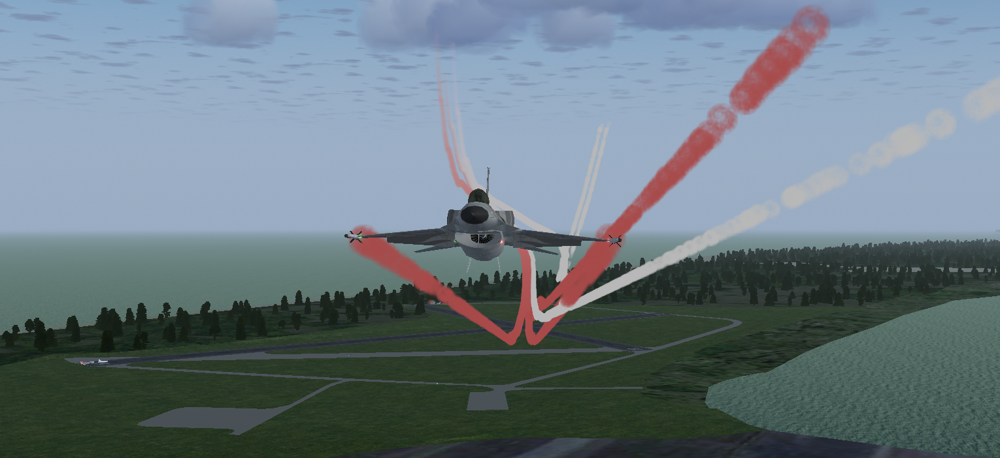
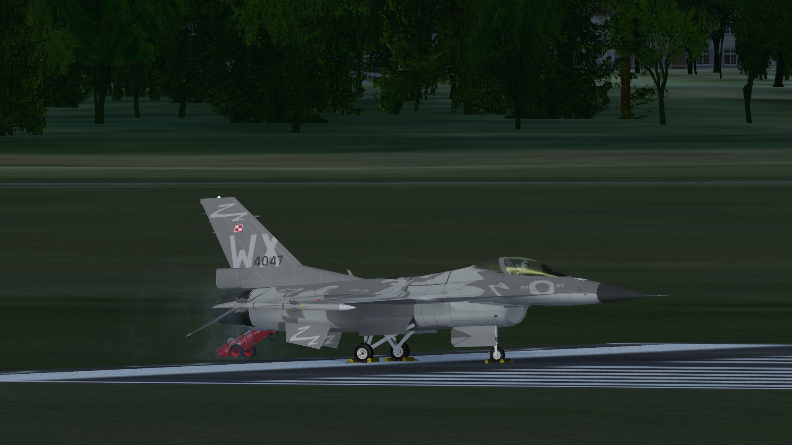
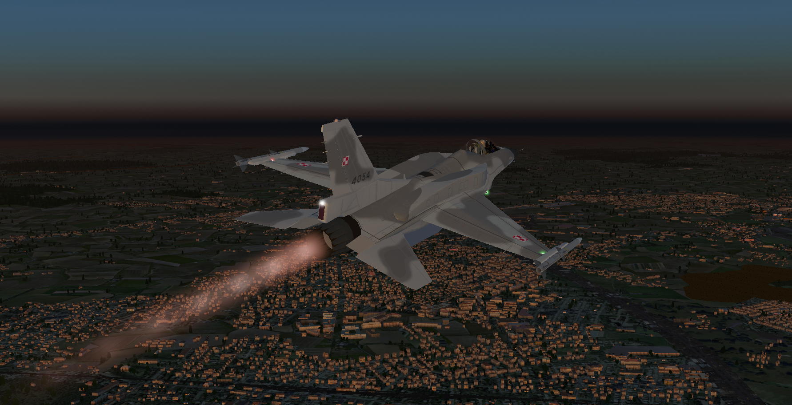
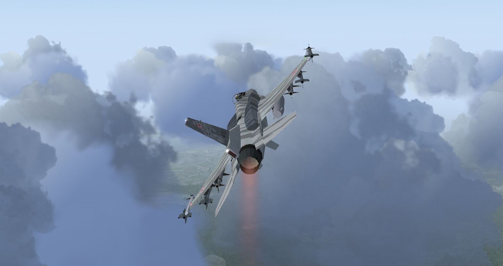

FlightGear Polska
Tiger Demo
Galeria zdjęć
Tu za niedługo znajdą się zdjęcia z pokazów lotniczych i treningów FGPL Tiger Demo w symulatorze FlightGear.
Niestety, dopiero kilka dni temu oficjalnie powstała ta eskadra, więc do pierwszego powitalnego pokazu w tę sobotę,
dnia 4 kwietnia, można będzie oglądać jedynie zdjęcia z wcześniejszych wydarzeń z udziałem naszych pilotów.



